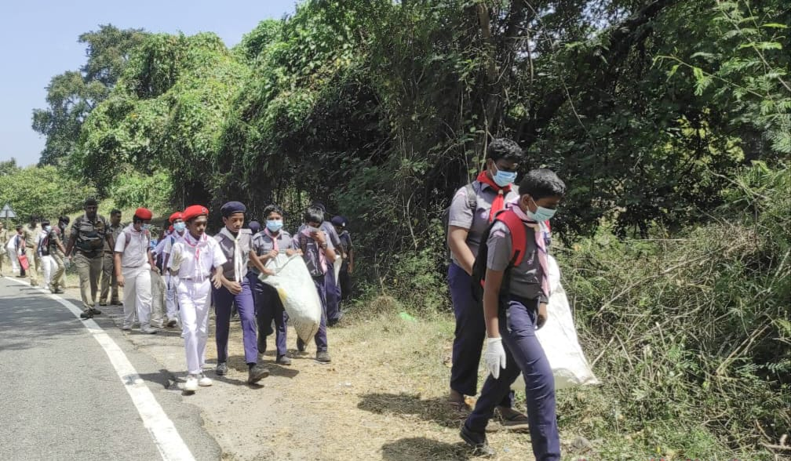

இடம் : கூடலூர் | நாள் : 07.02.2026
தேனி மாவட்டம் லோயர் - குமுளி மலைச்சாலையில் வனத்துறையினர் மற்றும் பள்ளி மாணவர்கள் இணைந்து பிளாஸ்டிக் கழிவுகளை அகற்றினர்.
கூடலூர் நகராட்சியின் 21 ஆவது வார்டு பகுதியான லோயர்கேம்ப் முதல் குமுளி வரை 6 கிலோமீட்டர் தூர சாலை பாதுகாக்கப்பட்ட வனப்பகுதியாக உள்ளது. நாள்தோறும் இந்த சாலை வழியாக ஆயிரக்கணக்கான வாகனங்கள் செல்லும் நிலையில், சிலர் வீசி எரியும் பிளாஸ்டிக் கழிவுகள் வன விலங்குகளுக்கு பாதிப்பை ஏற்படுத்துகின்றன.
இதனால் கூடலூர் நகராட்சி மற்றும் வனத்துறையினர் அவ்வப்போது குப்பைகளை அகற்றி வந்தனர்.
இந்நிலையில் நேற்று கூடலூர் வனச்சரக வனப்பணியாளர்கள், தேனி வனக்கோட்டம், கம்பம் மேற்கு வனச்சரக பணியாளர்கள் மற்றும் கூடலூர் என்.எஸ்.கே.பி. பள்ளி மாணவர்கள் இணைந்து லோயர் கேம்ப் பென்னிகுவிக் நினைவு மணிமண்டபம் முதல் குமுளி வனச்கோதனை சாவடி வரை நெகிழி அகற்றும் முகாம் நடத்தினர்.
கூடலூர் வனச்சரகர் பிரபாகரன், கம்பம் மேற்கு வனச்சரகர் ஸ்டாலின் தலைமையில் நடைபெற்ற முகாமில் 240 கிலோ ஒருமுறை பயன்படுத்தும் நெகிழிகள், குடிநீர் பாட்டில்கள், நெகிழி பைகள் மற்றும் 360 மதுபாட்டில்கள் சேகரம் செய்யப்பட்டது.
பின்னர் இவை கூடலூர் நகராட்சி அலுவலகத்திற்கு தெரிவிக்கப்பட்டு, நகராட்சியின் வாகனத்தின் மூலம் மறுசுழற்சி மையத்திற்கு அனுப்பப்பட்டது.